ADS01 — Danh sách cấu hình
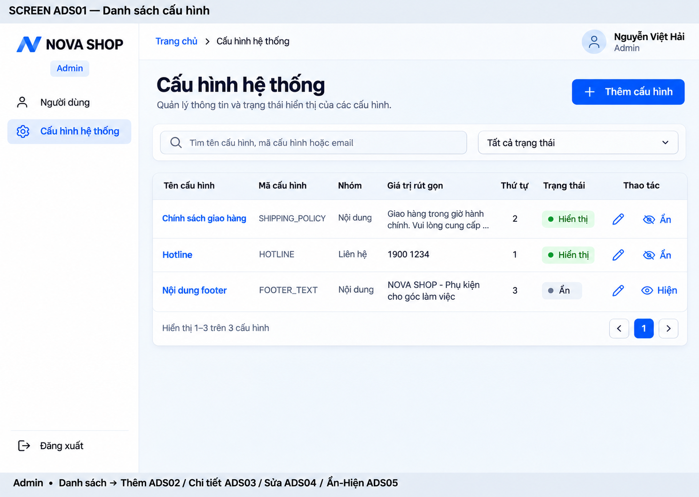
Vai trò: Admin
Use case: Danh sách cấu hình
Điểm vào: Sidebar Cấu hình hệ thống
Hành động và đích đến: Thêm → ADS02; chi tiết → ADS03
Điều kiện: Chỉ vai trò được cấp quyền. Ẩn/Hiện không xóa vĩnh viễn.
ADS02 — Thêm cấu hình
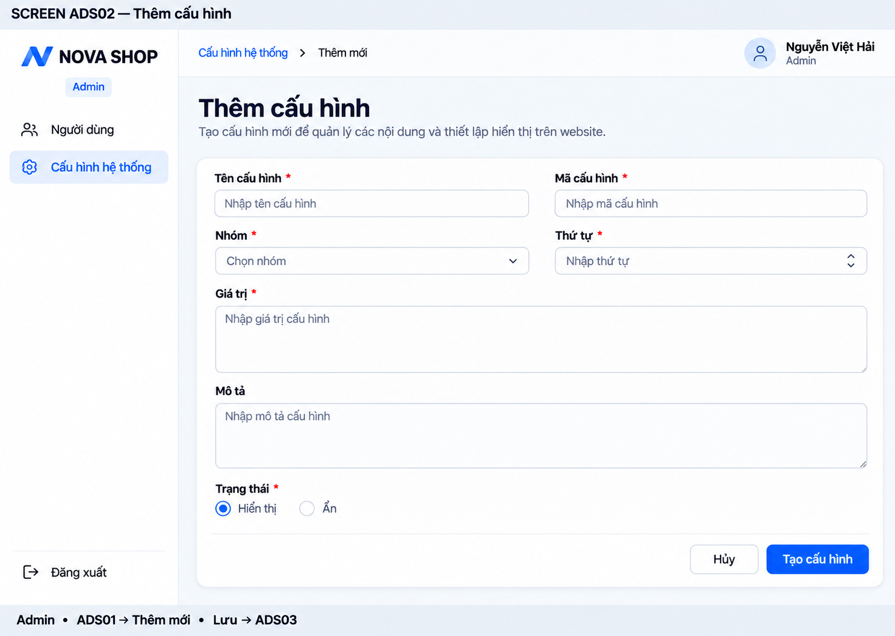
Vai trò: Admin
Use case: Thêm cấu hình
Điểm vào: ADS01 → Thêm mới
Hành động và đích đến: Tạo → ADS03; hủy → ADS01
Điều kiện: Chỉ vai trò được cấp quyền. Ẩn/Hiện không xóa vĩnh viễn.
ADS03 — Chi tiết cấu hình
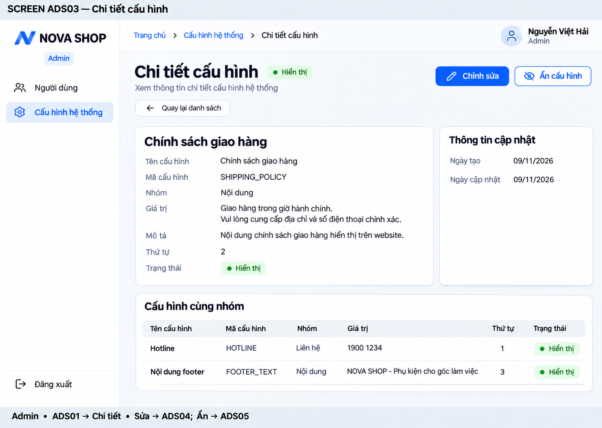
Vai trò: Admin
Use case: Chi tiết cấu hình
Điểm vào: ADS01 → chọn bản ghi
Hành động và đích đến: Chỉnh sửa → ADS04; ẩn → ADS05; quay lại → ADS01
Điều kiện: Chỉ vai trò được cấp quyền. Ẩn/Hiện không xóa vĩnh viễn.
ADS04 — Chỉnh sửa cấu hình
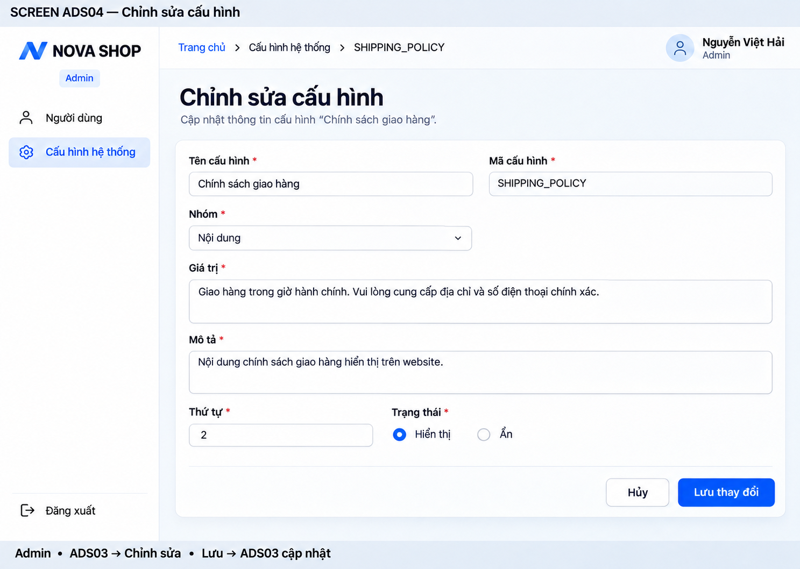
Vai trò: Admin
Use case: Chỉnh sửa cấu hình
Điểm vào: ADS03 → Chỉnh sửa
Hành động và đích đến: Lưu → ADS03; hủy → ADS03
Điều kiện: Chỉ vai trò được cấp quyền. Ẩn/Hiện không xóa vĩnh viễn.
ADS05 — Xác nhận ẩn cấu hình
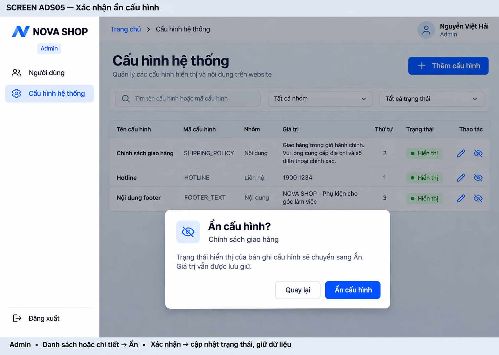
Vai trò: Admin
Use case: Xác nhận ẩn cấu hình
Điểm vào: ADS01 hoặc ADS03 → Ẩn
Hành động và đích đến: Ẩn → cập nhật trạng thái tại ADS01/ADS03; quay lại → màn nguồn
Điều kiện: Chỉ vai trò được cấp quyền. Ẩn/Hiện không xóa vĩnh viễn.
ADU01 — Danh sách người dùng
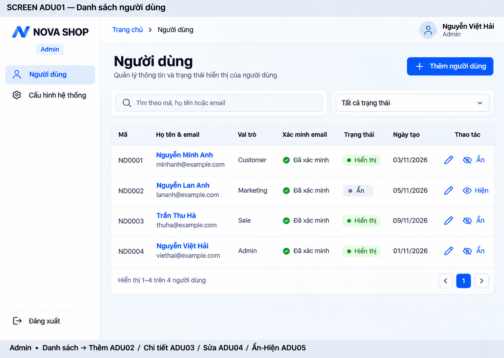
Vai trò: Admin
Use case: Danh sách người dùng
Điểm vào: Sidebar Người dùng
Hành động và đích đến: Thêm → ADU02; chi tiết → ADU03
Điều kiện: Chỉ vai trò được cấp quyền. Ẩn/Hiện không xóa vĩnh viễn. Ẩn bản ghi không được suy diễn thành khóa đăng nhập.
ADU02 — Thêm người dùng
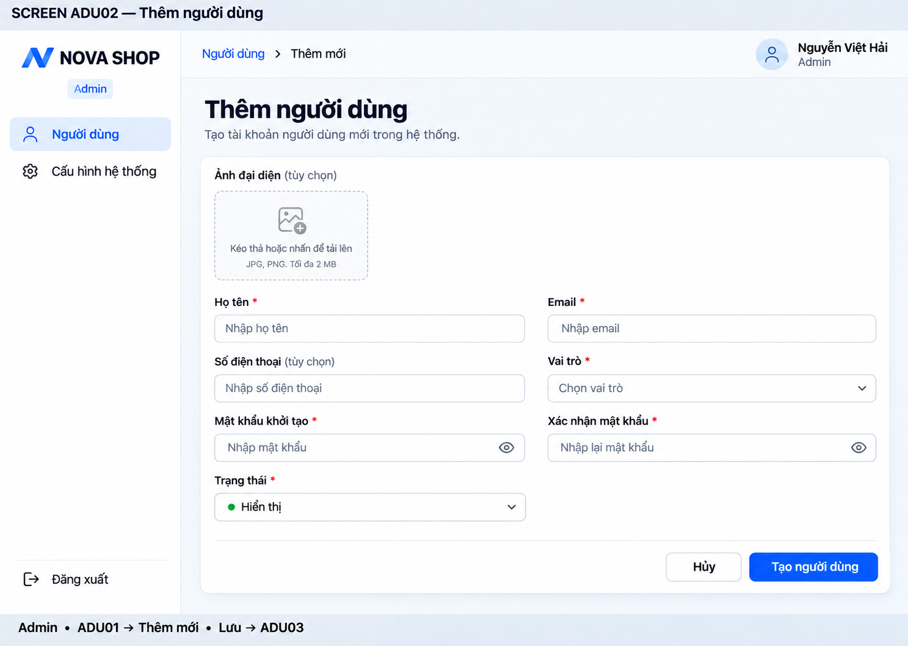
Vai trò: Admin
Use case: Thêm người dùng
Điểm vào: ADU01 → Thêm mới
Hành động và đích đến: Tạo → ADU03; hủy → ADU01
Điều kiện: Chỉ vai trò được cấp quyền. Ẩn/Hiện không xóa vĩnh viễn. Ẩn bản ghi không được suy diễn thành khóa đăng nhập.
ADU03 — Chi tiết người dùng
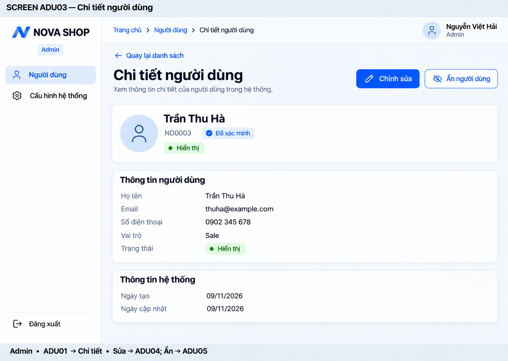
Vai trò: Admin
Use case: Chi tiết người dùng
Điểm vào: ADU01 → chọn bản ghi
Hành động và đích đến: Chỉnh sửa → ADU04; ẩn → ADU05; quay lại → ADU01
Điều kiện: Chỉ vai trò được cấp quyền. Ẩn/Hiện không xóa vĩnh viễn. Ẩn bản ghi không được suy diễn thành khóa đăng nhập.
ADU04 — Chỉnh sửa người dùng
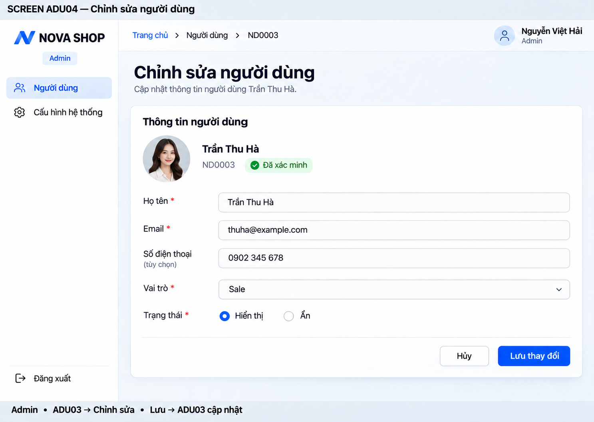
Vai trò: Admin
Use case: Chỉnh sửa người dùng
Điểm vào: ADU03 → Chỉnh sửa
Hành động và đích đến: Lưu → ADU03; hủy → ADU03
Điều kiện: Chỉ vai trò được cấp quyền. Ẩn/Hiện không xóa vĩnh viễn. Ẩn bản ghi không được suy diễn thành khóa đăng nhập.
ADU05 — Xác nhận ẩn người dùng
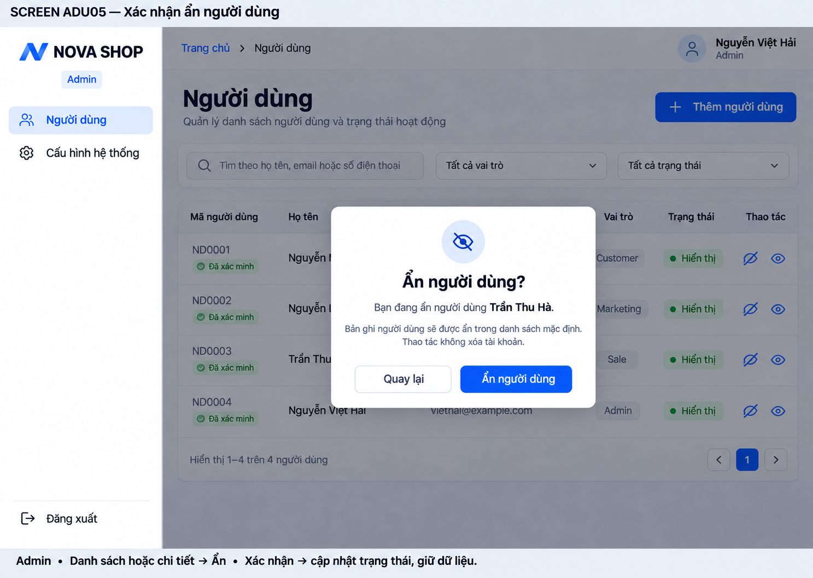
Vai trò: Admin
Use case: Xác nhận ẩn người dùng
Điểm vào: ADU01 hoặc ADU03 → Ẩn
Hành động và đích đến: Ẩn → cập nhật trạng thái tại ADU01/ADU03; quay lại → màn nguồn
Điều kiện: Chỉ vai trò được cấp quyền. Ẩn/Hiện không xóa vĩnh viễn. Ẩn bản ghi không được suy diễn thành khóa đăng nhập.
AU01 — Đăng nhập
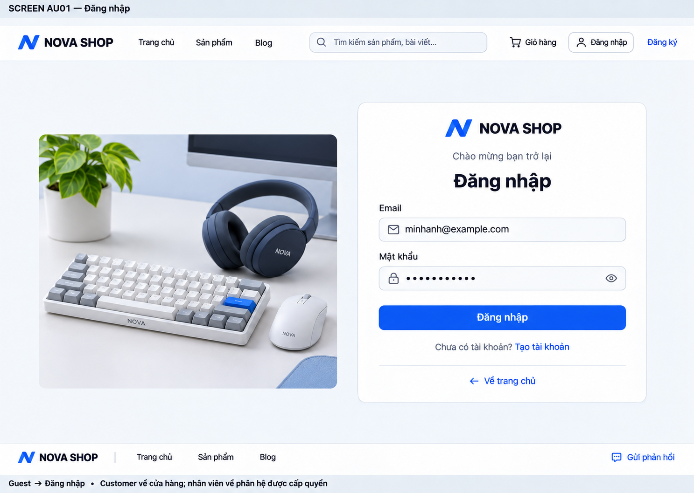
Vai trò: Guest / tài khoản hệ thống
Use case: Đăng nhập
Điểm vào: Header hoặc chức năng cần đăng nhập
Hành động và đích đến: Customer → website; Marketing → PR01; Sale → SL01; Manager → SM01; Admin → ADU01
Điều kiện: Không có Chatbot AI. Dữ liệu minh họa; không phải hệ thống đang hoạt động.
AU01-M — Đăng nhập — Mobile
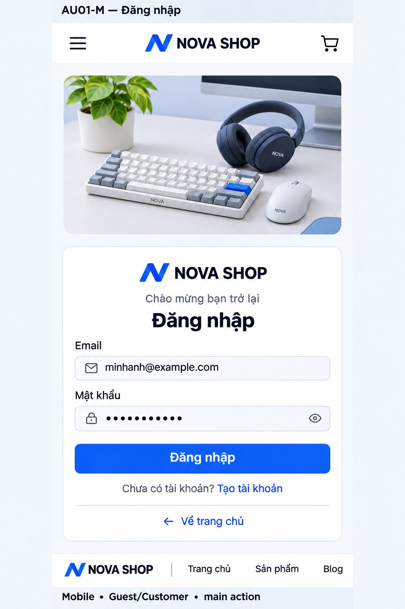
Vai trò: Guest / tài khoản hệ thống
Use case: Đăng nhập
Điểm vào: Header hoặc chức năng cần đăng nhập
Hành động và đích đến: Customer → website; Marketing → PR01; Sale → SL01; Manager → SM01; Admin → ADU01
Điều kiện: Không có Chatbot AI. Dữ liệu minh họa; không phải hệ thống đang hoạt động.
AU02 — Đăng ký tài khoản
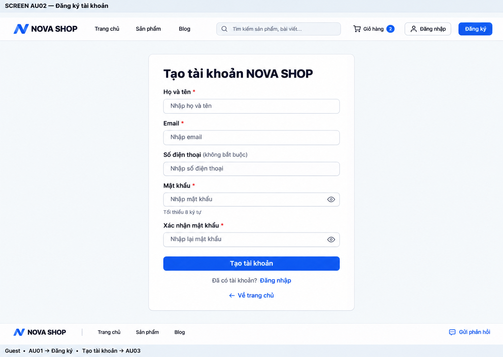
Vai trò: Guest / tài khoản hệ thống
Use case: Đăng ký tài khoản
Điểm vào: Đăng ký từ header/AU01
Hành động và đích đến: Tạo tài khoản → AU03
Điều kiện: Không có Chatbot AI. Dữ liệu minh họa; không phải hệ thống đang hoạt động.
AU02-M — Đăng ký tài khoản — Mobile
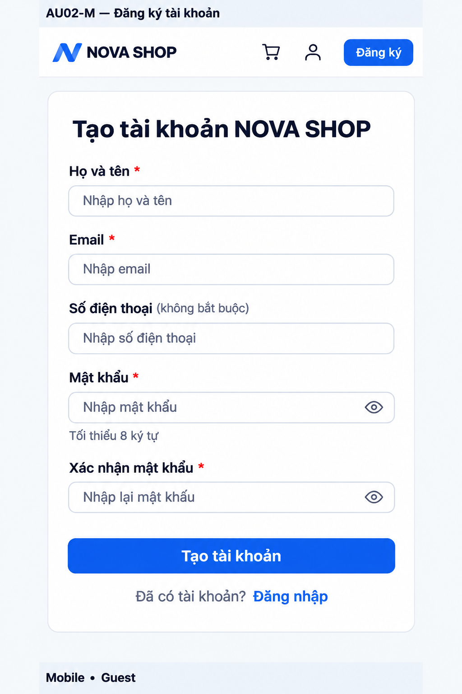
Vai trò: Guest / tài khoản hệ thống
Use case: Đăng ký tài khoản
Điểm vào: Đăng ký từ header/AU01
Hành động và đích đến: Tạo tài khoản → AU03
Điều kiện: Không có Chatbot AI. Dữ liệu minh họa; không phải hệ thống đang hoạt động.
AU03 — Chờ xác minh email
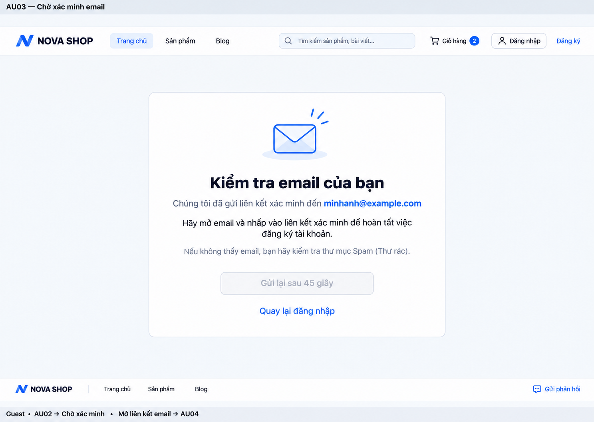
Vai trò: Guest / tài khoản hệ thống
Use case: Chờ xác minh email
Điểm vào: AU02
Hành động và đích đến: Liên kết email → AU04; quay lại đăng nhập → AU01
Điều kiện: Không có Chatbot AI. Dữ liệu minh họa; không phải hệ thống đang hoạt động.
AU04 — Xác minh email thành công
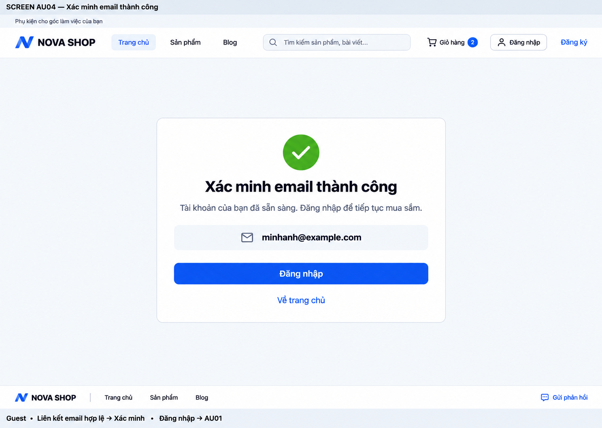
Vai trò: Guest / tài khoản hệ thống
Use case: Xác minh email thành công
Điểm vào: Liên kết xác minh email
Hành động và đích đến: Đăng nhập → AU01
Điều kiện: Không có Chatbot AI. Dữ liệu minh họa; không phải hệ thống đang hoạt động.
CU01 — Đơn hàng của tôi
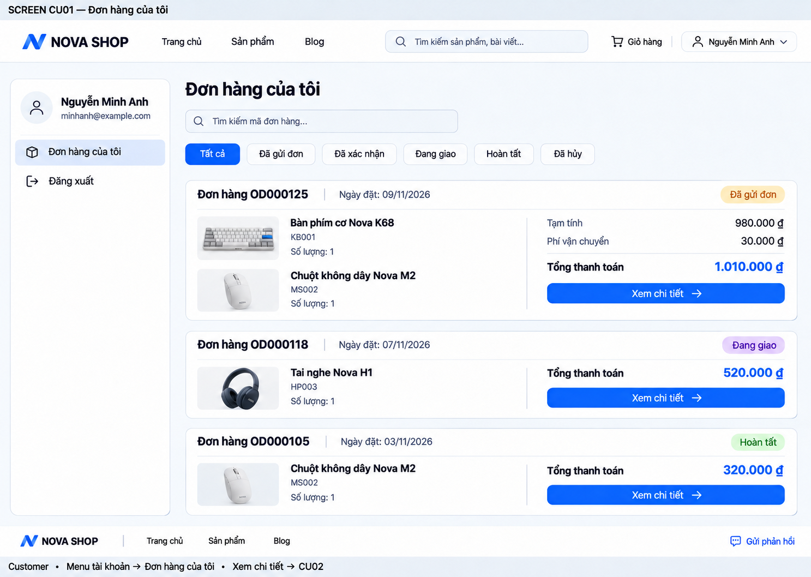
Vai trò: Customer
Use case: Đơn hàng của tôi
Điểm vào: Menu Đơn hàng của tôi
Hành động và đích đến: Xem chi tiết → CU02
Điều kiện: Chỉ đơn thuộc Customer hiện tại. Sửa/hủy chỉ khi Submitted; kiểm tra lại điều kiện khi lưu.
CU01-EMPTY — Chưa có đơn hàng
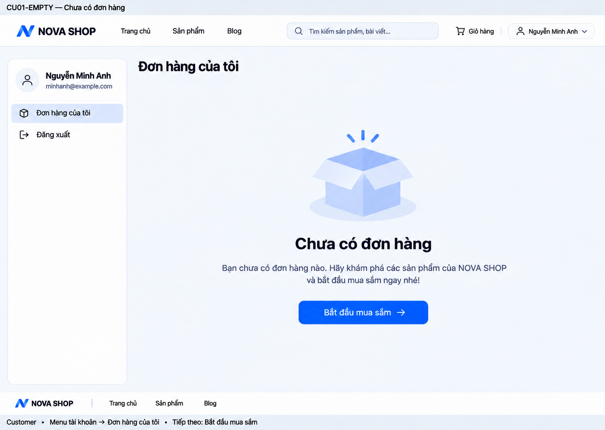
Vai trò: Customer
Use case: Đơn hàng của tôi
Điểm vào: Biến thể của CU01
Hành động và đích đến: Bắt đầu mua sắm → SF02.
Điều kiện: Chỉ đơn thuộc Customer hiện tại. Sửa/hủy chỉ khi Submitted; kiểm tra lại điều kiện khi lưu.
CU01-M — Đơn hàng của tôi — Mobile
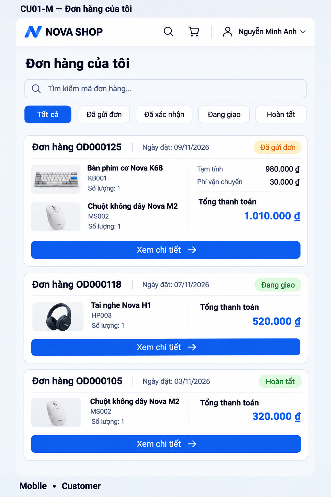
Vai trò: Customer
Use case: Đơn hàng của tôi
Điểm vào: Menu Đơn hàng của tôi
Hành động và đích đến: Xem chi tiết → CU02
Điều kiện: Chỉ đơn thuộc Customer hiện tại. Sửa/hủy chỉ khi Submitted; kiểm tra lại điều kiện khi lưu.
CU02 — Chi tiết đơn hàng của tôi
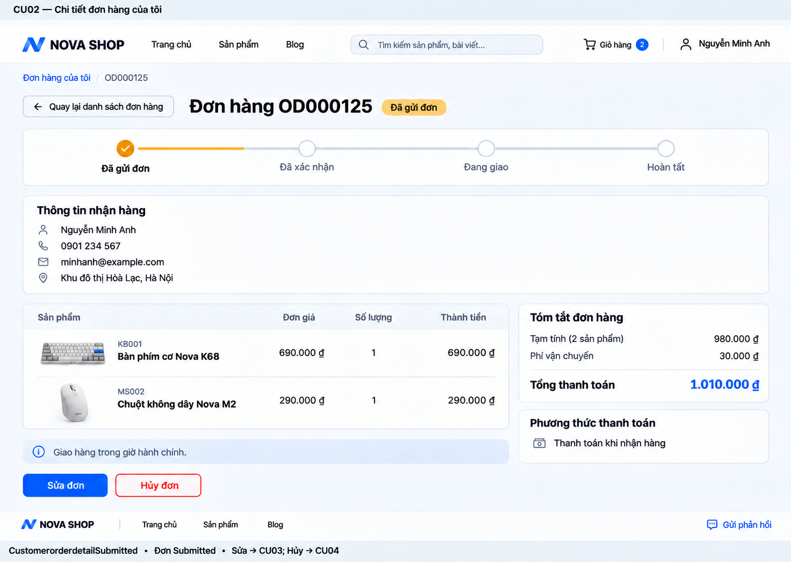
Vai trò: Customer
Use case: Chi tiết đơn hàng của tôi
Điểm vào: CU01 hoặc xác nhận đơn của Customer
Hành động và đích đến: Sửa → CU03; hủy → CU04; quay lại → CU01
Điều kiện: Chỉ đơn thuộc Customer hiện tại. Sửa/hủy chỉ khi Submitted; kiểm tra lại điều kiện khi lưu.
CU02-CANCELLED — Đơn đã hủy
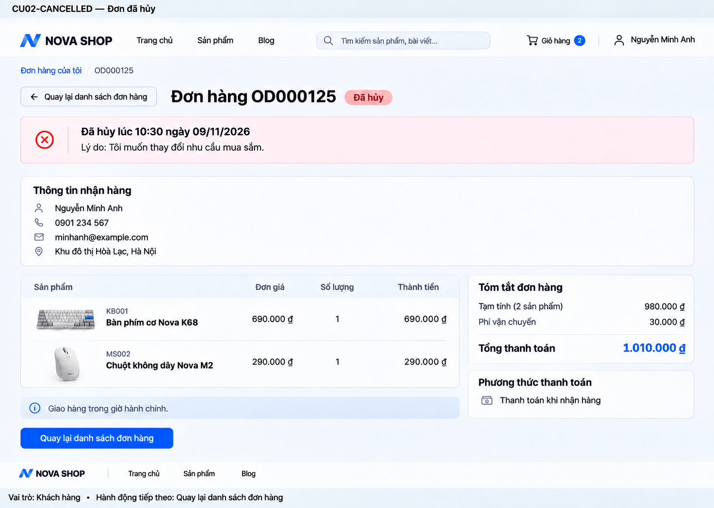
Vai trò: Customer
Use case: Chi tiết đơn hàng của tôi
Điểm vào: Biến thể của CU02
Hành động và đích đến: Quay lại CU01. Hiển thị thời điểm và lý do hủy.
Điều kiện: Chỉ đơn thuộc Customer hiện tại. Sửa/hủy chỉ khi Submitted; kiểm tra lại điều kiện khi lưu.
CU02-COMPLETED — Đơn hoàn tất
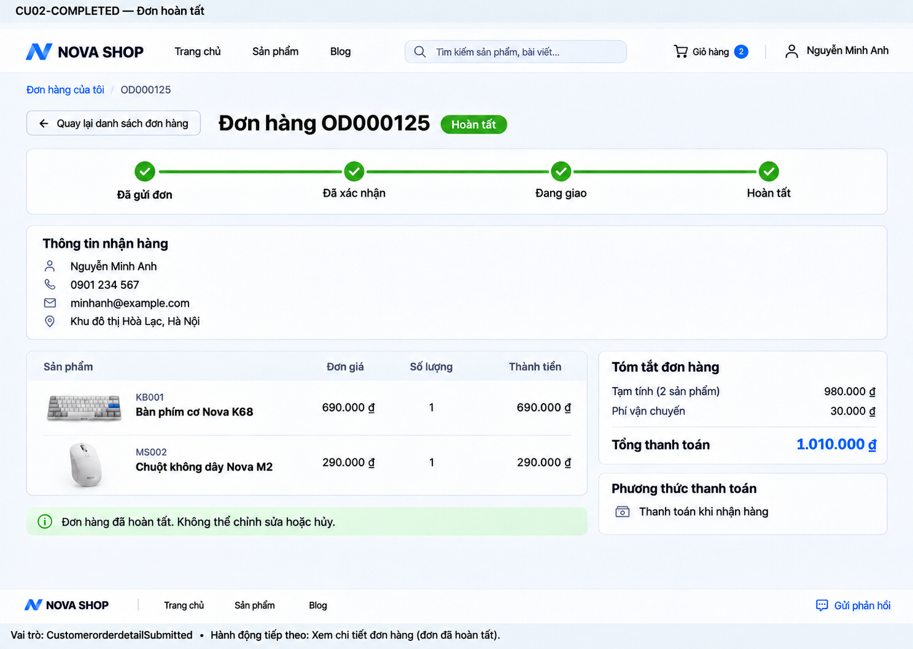
Vai trò: Customer
Use case: Chi tiết đơn hàng của tôi
Điểm vào: Biến thể của CU02
Hành động và đích đến: Quay lại CU01. Không sửa/hủy.
Điều kiện: Chỉ đơn thuộc Customer hiện tại. Sửa/hủy chỉ khi Submitted; kiểm tra lại điều kiện khi lưu.
CU02-CONFIRMED — Đơn đã xác nhận
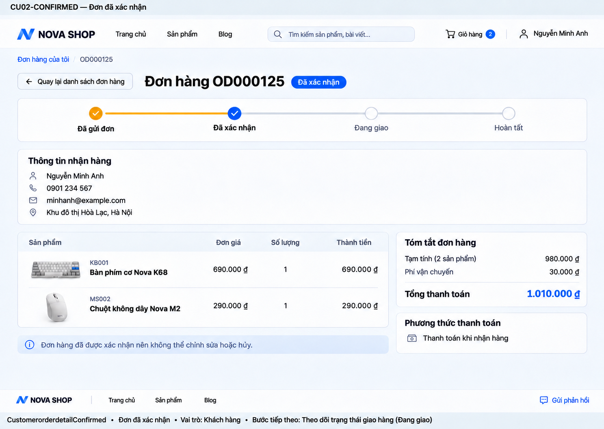
Vai trò: Customer
Use case: Chi tiết đơn hàng của tôi
Điểm vào: Biến thể của CU02
Hành động và đích đến: Quay lại CU01; theo dõi tiến trình. Không sửa/hủy.
Điều kiện: Chỉ đơn thuộc Customer hiện tại. Sửa/hủy chỉ khi Submitted; kiểm tra lại điều kiện khi lưu.
CU02-M — Chi tiết đơn hàng của tôi — Mobile
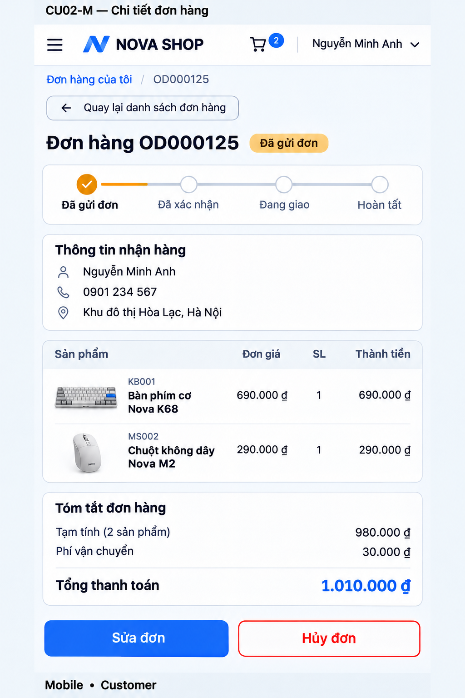
Vai trò: Customer
Use case: Chi tiết đơn hàng của tôi
Điểm vào: CU01 hoặc xác nhận đơn của Customer
Hành động và đích đến: Sửa → CU03; hủy → CU04; quay lại → CU01
Điều kiện: Chỉ đơn thuộc Customer hiện tại. Sửa/hủy chỉ khi Submitted; kiểm tra lại điều kiện khi lưu.
CU02-SHIPPING — Đơn đang giao
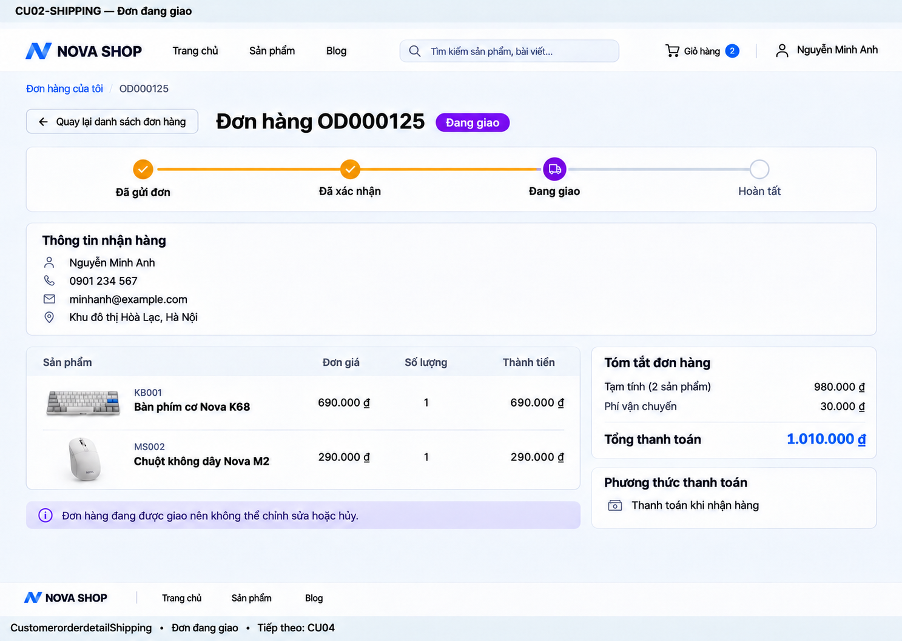
Vai trò: Customer
Use case: Chi tiết đơn hàng của tôi
Điểm vào: Biến thể của CU02
Hành động và đích đến: Quay lại CU01; theo dõi tiến trình. Không chuyển sang CU04.
Điều kiện: Chỉ đơn thuộc Customer hiện tại. Sửa/hủy chỉ khi Submitted; kiểm tra lại điều kiện khi lưu.
CU03 — Sửa đơn hàng
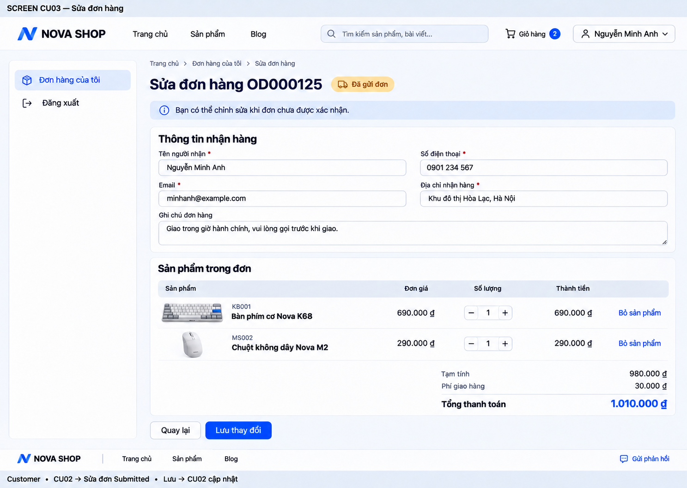
Vai trò: Customer
Use case: Sửa đơn hàng
Điểm vào: CU02 khi Submitted
Hành động và đích đến: Lưu → CU02 với dữ liệu mới; quay lại → CU02
Điều kiện: Chỉ đơn thuộc Customer hiện tại. Sửa/hủy chỉ khi Submitted; kiểm tra lại điều kiện khi lưu.
CU03-CONFLICT — Không thể sửa đơn
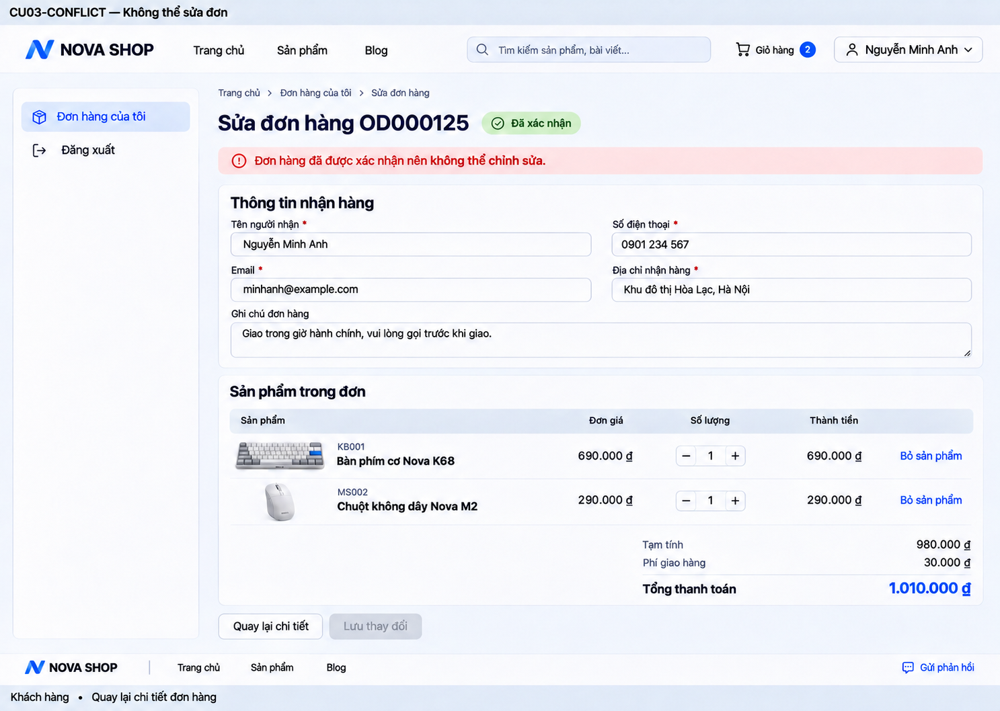
Vai trò: Customer
Use case: Sửa đơn hàng
Điểm vào: Biến thể của CU03
Hành động và đích đến: Quay lại CU02 để tải trạng thái mới; không lưu thay đổi.
Điều kiện: Chỉ đơn thuộc Customer hiện tại. Sửa/hủy chỉ khi Submitted; kiểm tra lại điều kiện khi lưu.
CU04 — Xác nhận hủy đơn
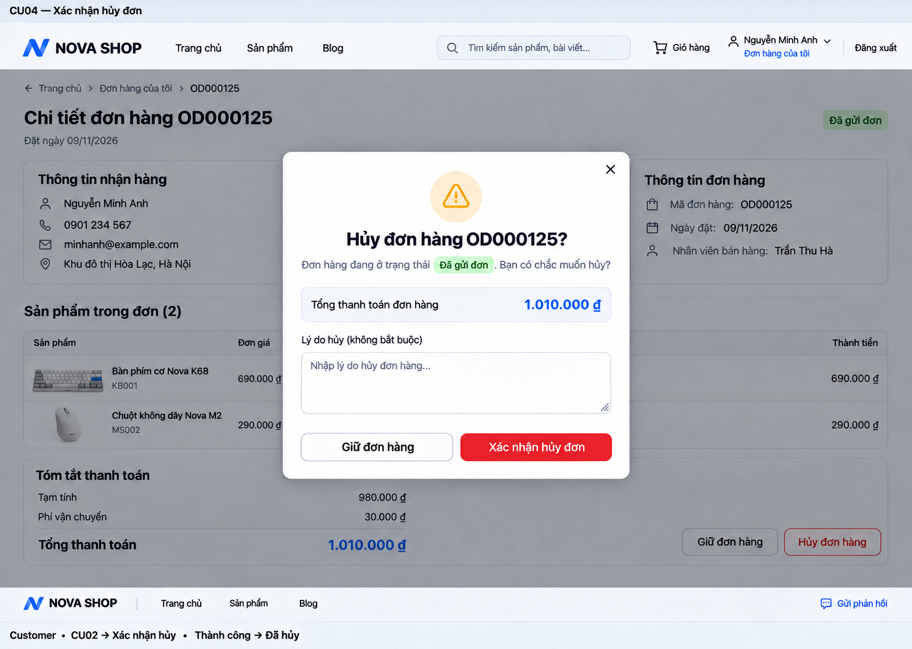
Vai trò: Customer
Use case: Xác nhận hủy đơn
Điểm vào: CU02 khi Submitted
Hành động và đích đến: Xác nhận hủy → CU02-CANCELLED; giữ đơn → CU02
Điều kiện: Chỉ đơn thuộc Customer hiện tại. Sửa/hủy chỉ khi Submitted; kiểm tra lại điều kiện khi lưu.
CU04-CONFLICT — Không thể hủy đơn
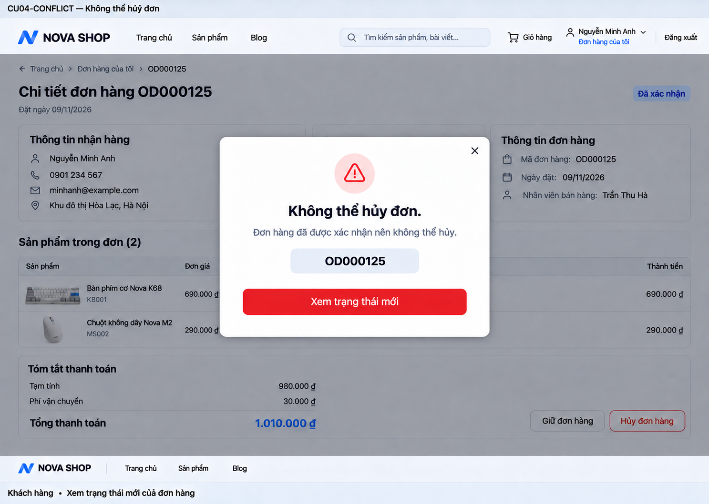
Vai trò: Customer
Use case: Xác nhận hủy đơn
Điểm vào: Biến thể của CU04
Hành động và đích đến: Xem trạng thái mới → CU02; không hủy đơn.
Điều kiện: Chỉ đơn thuộc Customer hiện tại. Sửa/hủy chỉ khi Submitted; kiểm tra lại điều kiện khi lưu.
MC01 — Danh sách khách hàng
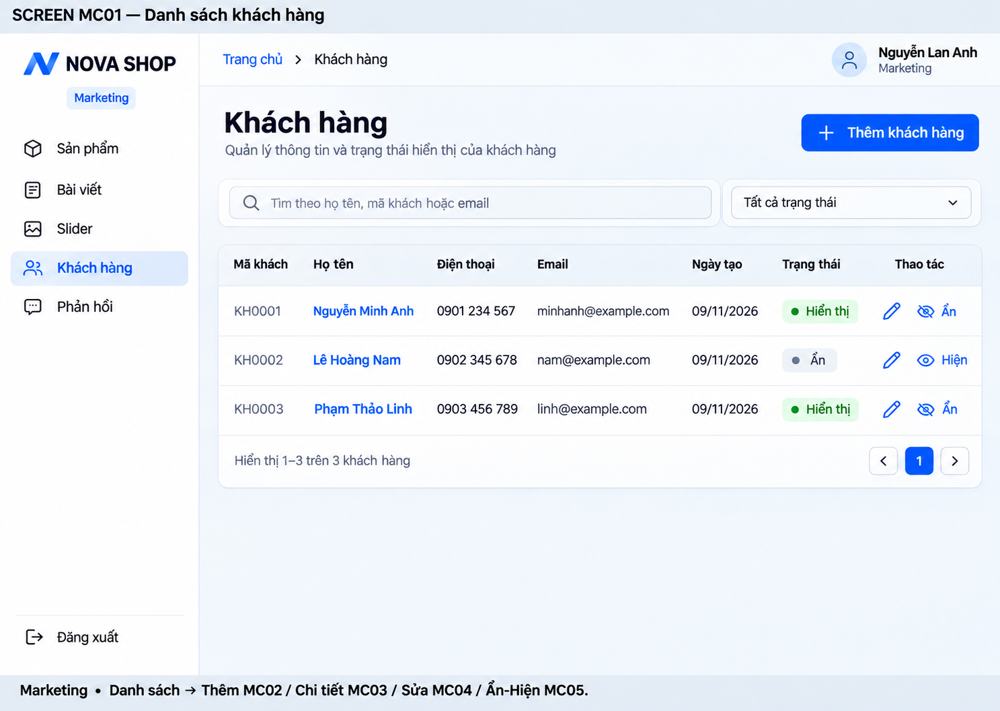
Vai trò: Marketing
Use case: Danh sách khách hàng
Điểm vào: Sidebar Khách hàng
Hành động và đích đến: Thêm → MC02; chi tiết → MC03
Điều kiện: Chỉ vai trò được cấp quyền. Ẩn/Hiện không xóa vĩnh viễn. Ẩn bản ghi không được suy diễn thành khóa đăng nhập.
MC02 — Thêm khách hàng
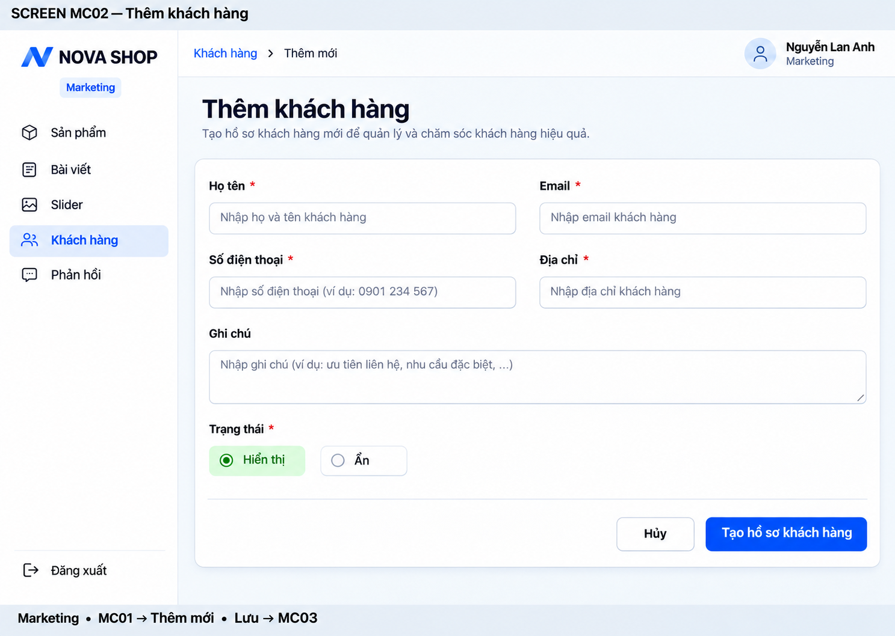
Vai trò: Marketing
Use case: Thêm khách hàng
Điểm vào: MC01 → Thêm mới
Hành động và đích đến: Tạo → MC03; hủy → MC01
Điều kiện: Chỉ vai trò được cấp quyền. Ẩn/Hiện không xóa vĩnh viễn. Ẩn bản ghi không được suy diễn thành khóa đăng nhập.
MC03 — Chi tiết khách hàng
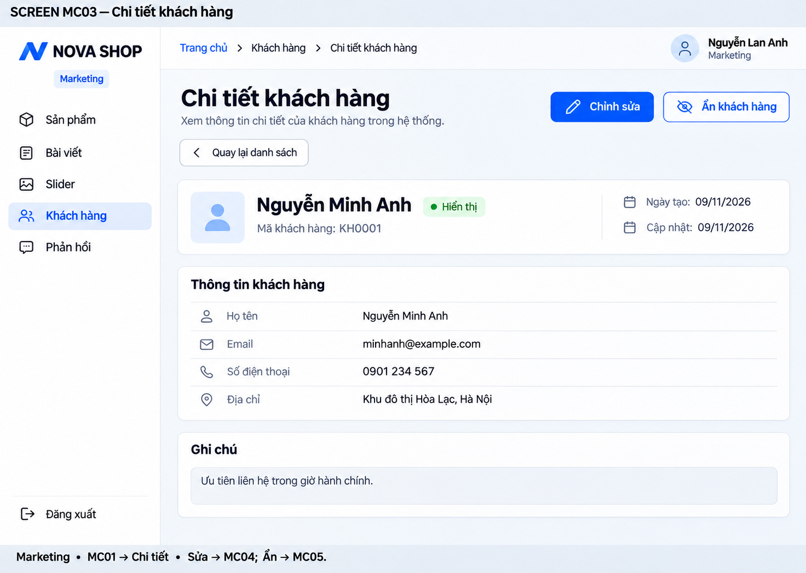
Vai trò: Marketing
Use case: Chi tiết khách hàng
Điểm vào: MC01 → chọn bản ghi
Hành động và đích đến: Chỉnh sửa → MC04; ẩn → MC05; quay lại → MC01
Điều kiện: Chỉ vai trò được cấp quyền. Ẩn/Hiện không xóa vĩnh viễn. Ẩn bản ghi không được suy diễn thành khóa đăng nhập.
MC04 — Chỉnh sửa khách hàng
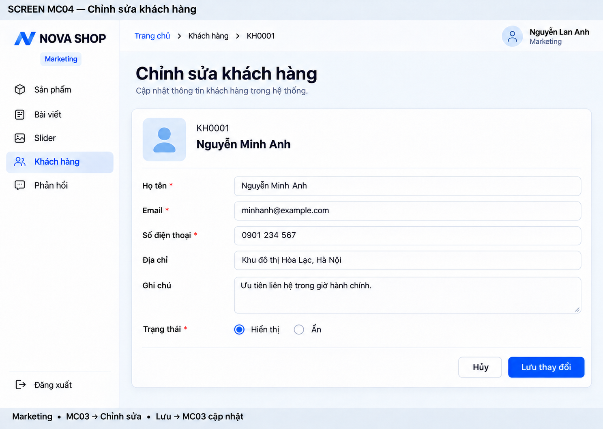
Vai trò: Marketing
Use case: Chỉnh sửa khách hàng
Điểm vào: MC03 → Chỉnh sửa
Hành động và đích đến: Lưu → MC03; hủy → MC03
Điều kiện: Chỉ vai trò được cấp quyền. Ẩn/Hiện không xóa vĩnh viễn. Ẩn bản ghi không được suy diễn thành khóa đăng nhập.
MC05 — Xác nhận ẩn khách hàng
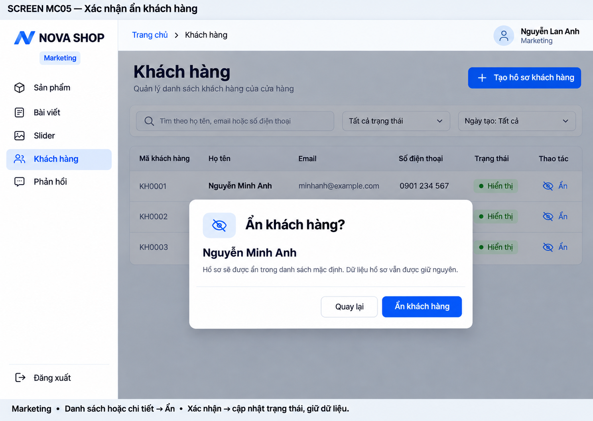
Vai trò: Marketing
Use case: Xác nhận ẩn khách hàng
Điểm vào: MC01 hoặc MC03 → Ẩn
Hành động và đích đến: Ẩn → cập nhật trạng thái tại MC01/MC03; quay lại → màn nguồn
Điều kiện: Chỉ vai trò được cấp quyền. Ẩn/Hiện không xóa vĩnh viễn. Ẩn bản ghi không được suy diễn thành khóa đăng nhập.
MF01 — Danh sách phản hồi
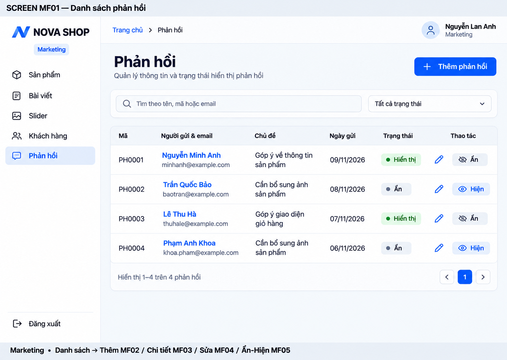
Vai trò: Marketing
Use case: Danh sách phản hồi
Điểm vào: Sidebar Phản hồi
Hành động và đích đến: Thêm → MF02; chi tiết → MF03
Điều kiện: Chỉ vai trò được cấp quyền. Ẩn/Hiện không xóa vĩnh viễn.
MF02 — Thêm phản hồi
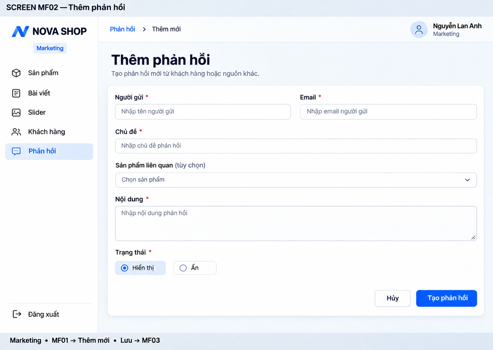
Vai trò: Marketing
Use case: Thêm phản hồi
Điểm vào: MF01 → Thêm mới
Hành động và đích đến: Tạo → MF03; hủy → MF01
Điều kiện: Chỉ vai trò được cấp quyền. Ẩn/Hiện không xóa vĩnh viễn.
MF03 — Chi tiết phản hồi
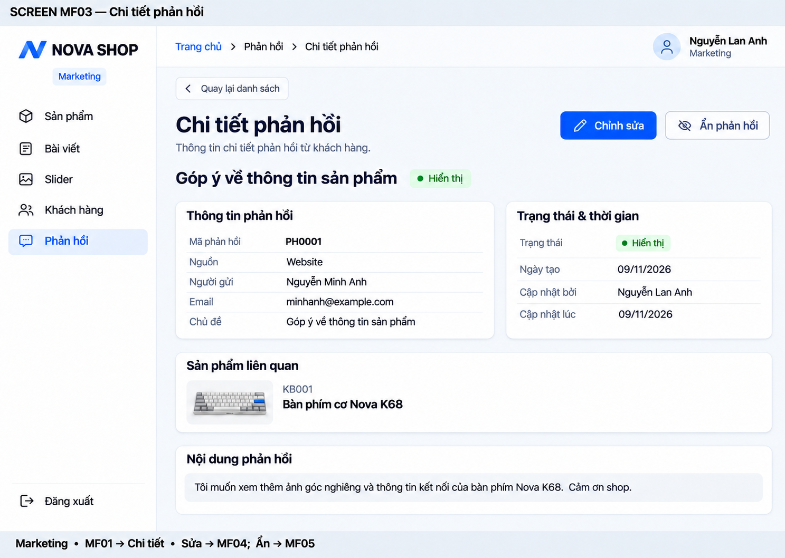
Vai trò: Marketing
Use case: Chi tiết phản hồi
Điểm vào: MF01 → chọn bản ghi
Hành động và đích đến: Chỉnh sửa → MF04; ẩn → MF05; quay lại → MF01
Điều kiện: Chỉ vai trò được cấp quyền. Ẩn/Hiện không xóa vĩnh viễn.
MF04 — Chỉnh sửa phản hồi
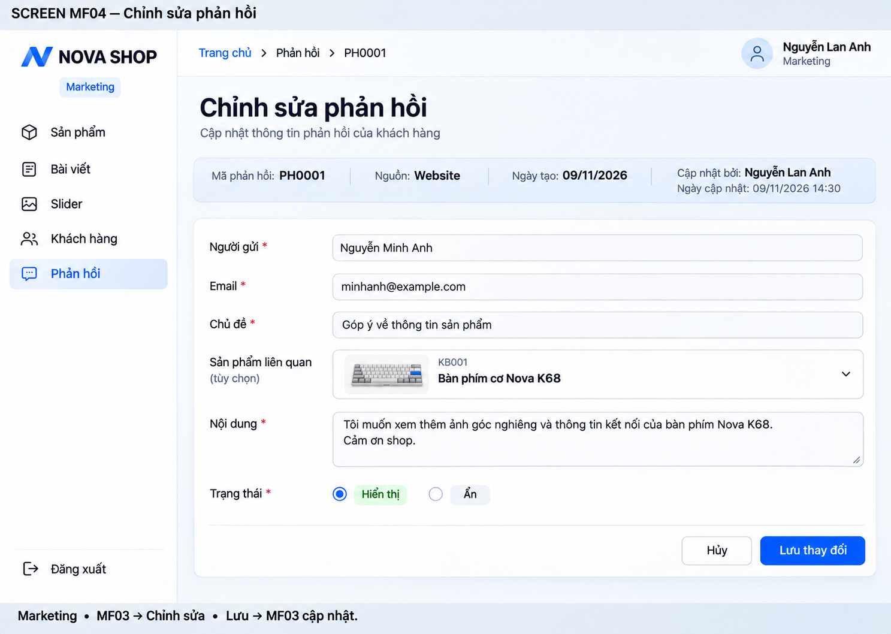
Vai trò: Marketing
Use case: Chỉnh sửa phản hồi
Điểm vào: MF03 → Chỉnh sửa
Hành động và đích đến: Lưu → MF03; hủy → MF03
Điều kiện: Chỉ vai trò được cấp quyền. Ẩn/Hiện không xóa vĩnh viễn.
MF05 — Xác nhận ẩn phản hồi
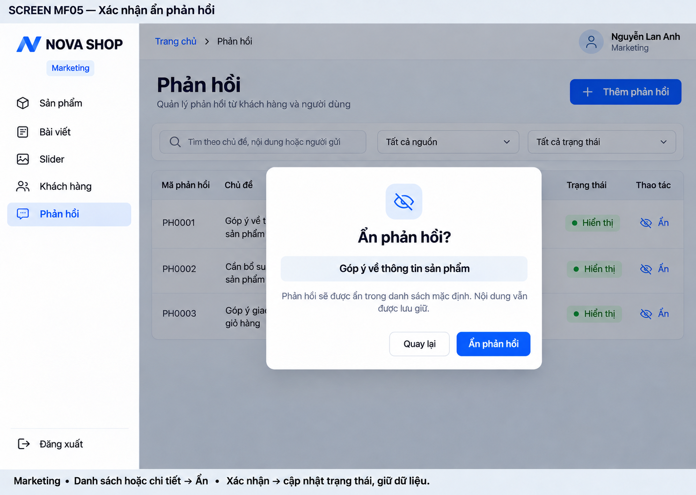
Vai trò: Marketing
Use case: Xác nhận ẩn phản hồi
Điểm vào: MF01 hoặc MF03 → Ẩn
Hành động và đích đến: Ẩn → cập nhật trạng thái tại MF01/MF03; quay lại → màn nguồn
Điều kiện: Chỉ vai trò được cấp quyền. Ẩn/Hiện không xóa vĩnh viễn.
MP01 — Danh sách bài viết
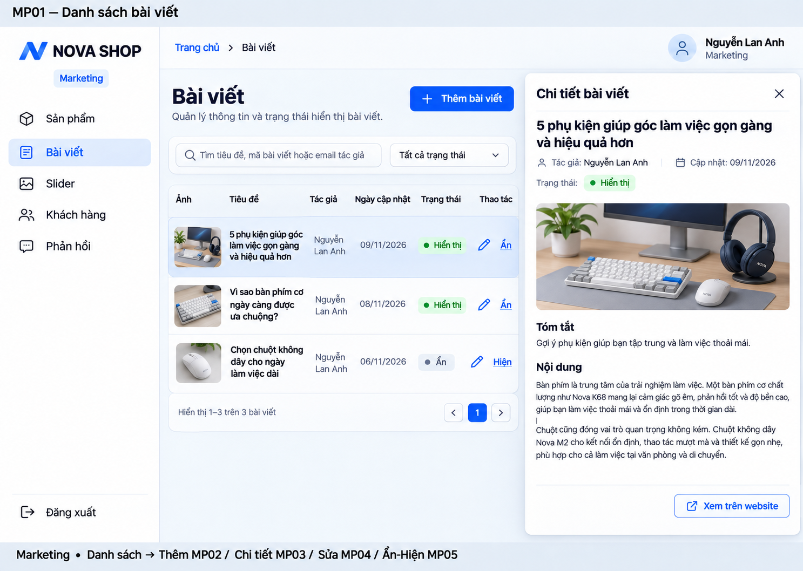
Vai trò: Marketing
Use case: Danh sách bài viết
Điểm vào: Sidebar Bài viết
Hành động và đích đến: Thêm → MP02; chi tiết → MP03
Điều kiện: Chỉ vai trò được cấp quyền. Ẩn/Hiện không xóa vĩnh viễn.
MP02 — Thêm bài viết
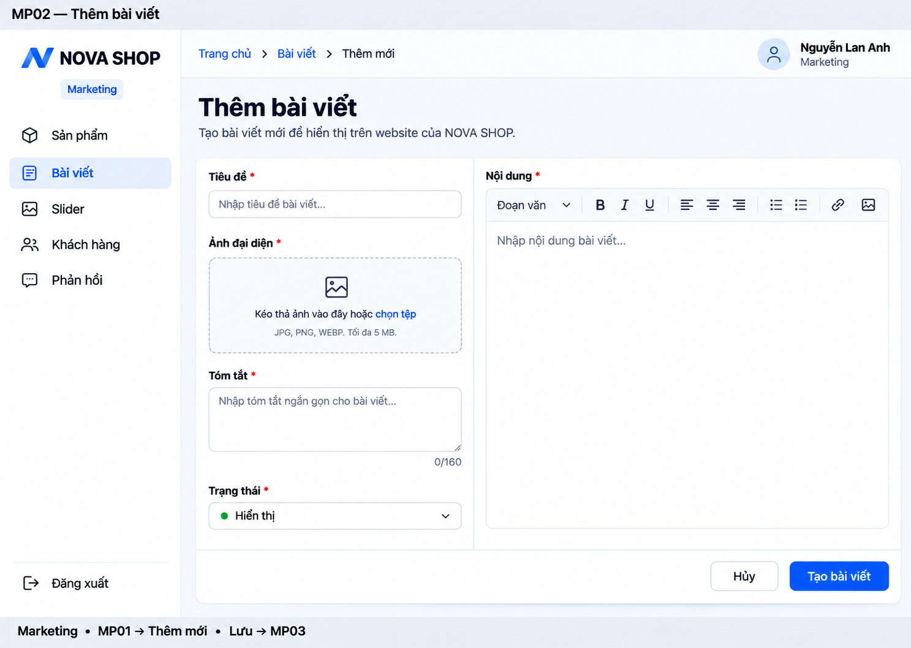
Vai trò: Marketing
Use case: Thêm bài viết
Điểm vào: MP01 → Thêm mới
Hành động và đích đến: Tạo → MP03; hủy → MP01
Điều kiện: Chỉ vai trò được cấp quyền. Ẩn/Hiện không xóa vĩnh viễn.
MP03 — Chi tiết bài viết
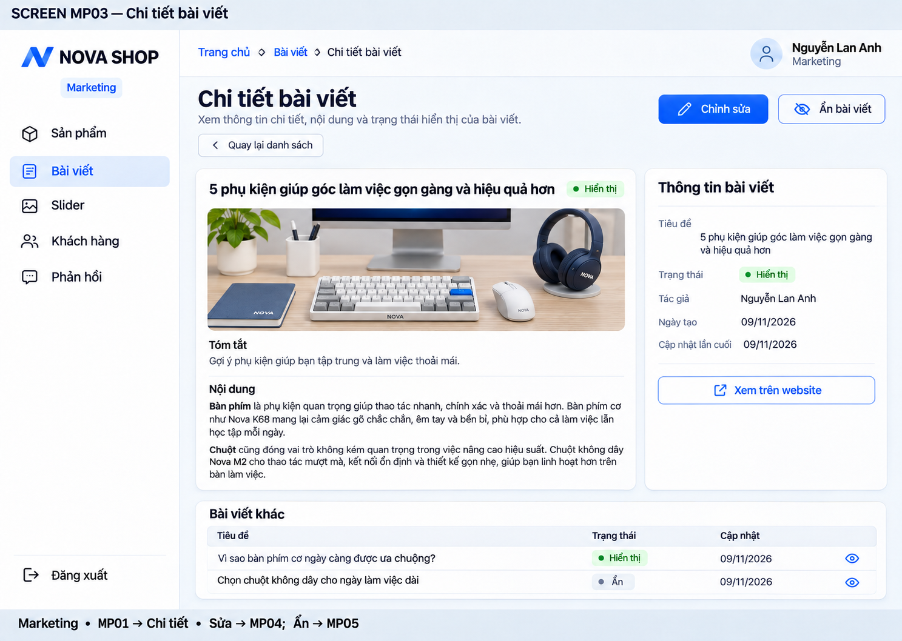
Vai trò: Marketing
Use case: Chi tiết bài viết
Điểm vào: MP01 → chọn bản ghi
Hành động và đích đến: Chỉnh sửa → MP04; ẩn → MP05; quay lại → MP01
Điều kiện: Chỉ vai trò được cấp quyền. Ẩn/Hiện không xóa vĩnh viễn.
MP04 — Chỉnh sửa bài viết
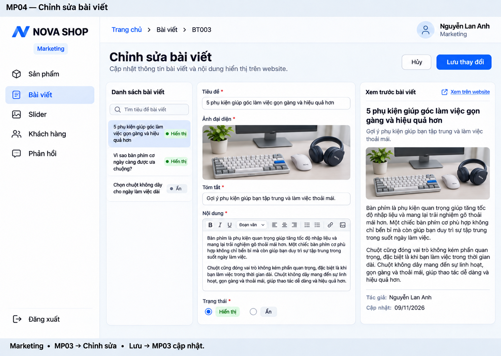
Vai trò: Marketing
Use case: Chỉnh sửa bài viết
Điểm vào: MP03 → Chỉnh sửa
Hành động và đích đến: Lưu → MP03; hủy → MP03
Điều kiện: Chỉ vai trò được cấp quyền. Ẩn/Hiện không xóa vĩnh viễn.
MP05 — Xác nhận ẩn bài viết
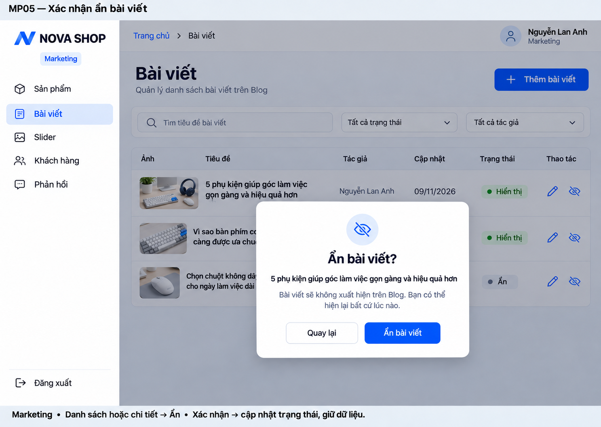
Vai trò: Marketing
Use case: Xác nhận ẩn bài viết
Điểm vào: MP01 hoặc MP03 → Ẩn
Hành động và đích đến: Ẩn → cập nhật trạng thái tại MP01/MP03; quay lại → màn nguồn
Điều kiện: Chỉ vai trò được cấp quyền. Ẩn/Hiện không xóa vĩnh viễn.
MS01 — Danh sách slider
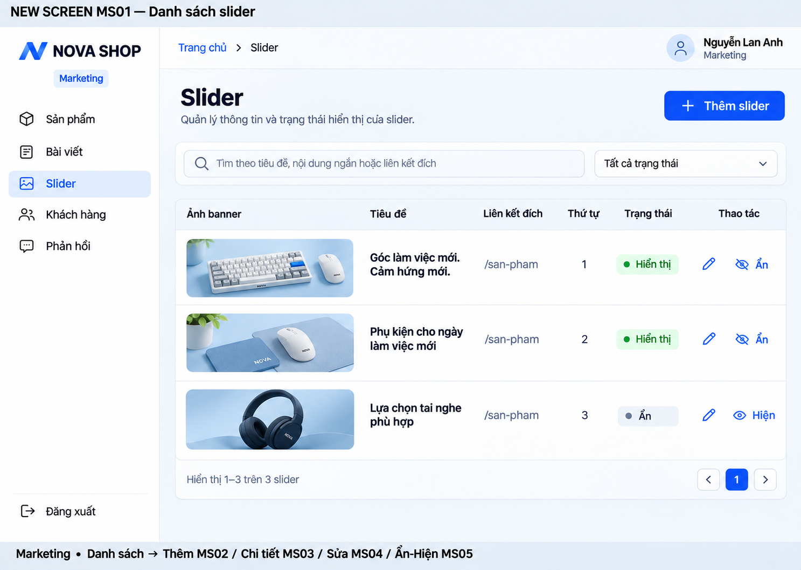
Vai trò: Marketing
Use case: Danh sách slider
Điểm vào: Sidebar Slider
Hành động và đích đến: Thêm → MS02; chi tiết → MS03
Điều kiện: Chỉ vai trò được cấp quyền. Ẩn/Hiện không xóa vĩnh viễn.
MS02 — Thêm slider
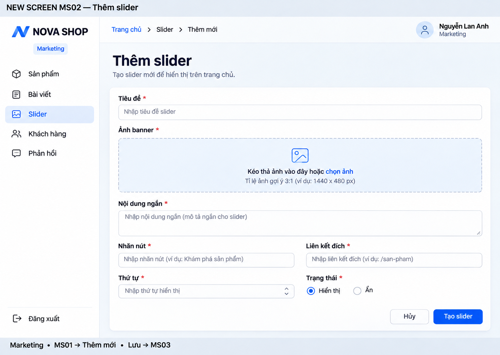
Vai trò: Marketing
Use case: Thêm slider
Điểm vào: MS01 → Thêm mới
Hành động và đích đến: Tạo → MS03; hủy → MS01
Điều kiện: Chỉ vai trò được cấp quyền. Ẩn/Hiện không xóa vĩnh viễn.
MS03 — Chi tiết slider
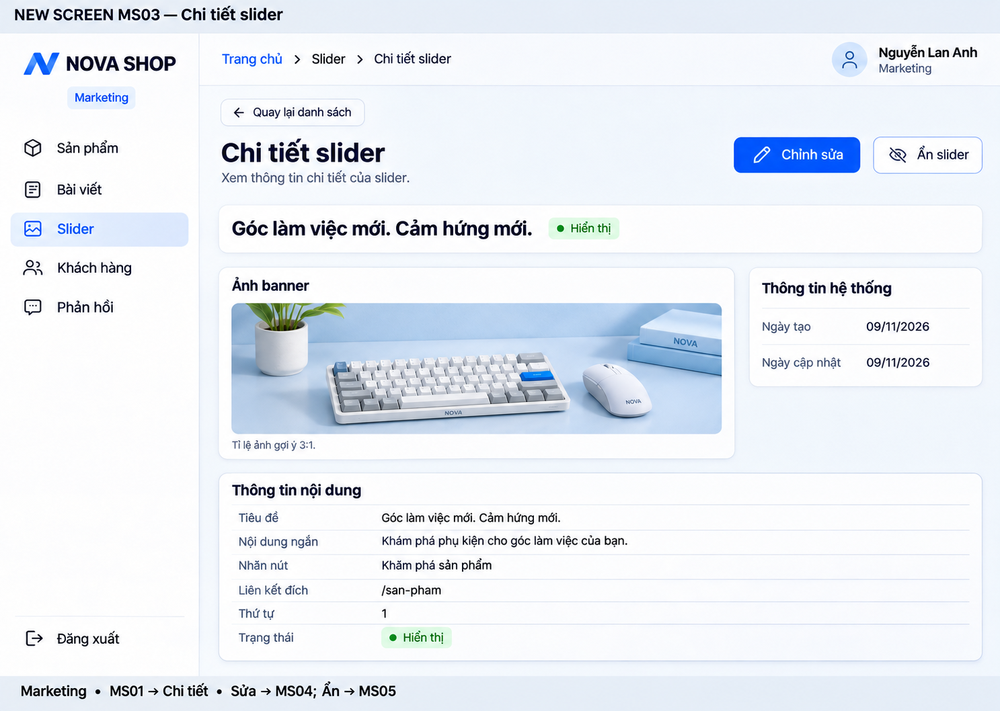
Vai trò: Marketing
Use case: Chi tiết slider
Điểm vào: MS01 → chọn bản ghi
Hành động và đích đến: Chỉnh sửa → MS04; ẩn → MS05; quay lại → MS01
Điều kiện: Chỉ vai trò được cấp quyền. Ẩn/Hiện không xóa vĩnh viễn.
MS04 — Chỉnh sửa slider
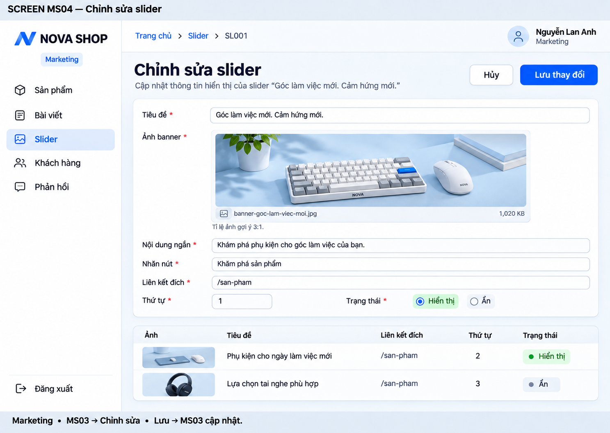
Vai trò: Marketing
Use case: Chỉnh sửa slider
Điểm vào: MS03 → Chỉnh sửa
Hành động và đích đến: Lưu → MS03; hủy → MS03
Điều kiện: Chỉ vai trò được cấp quyền. Ẩn/Hiện không xóa vĩnh viễn.
MS05 — Xác nhận ẩn slider
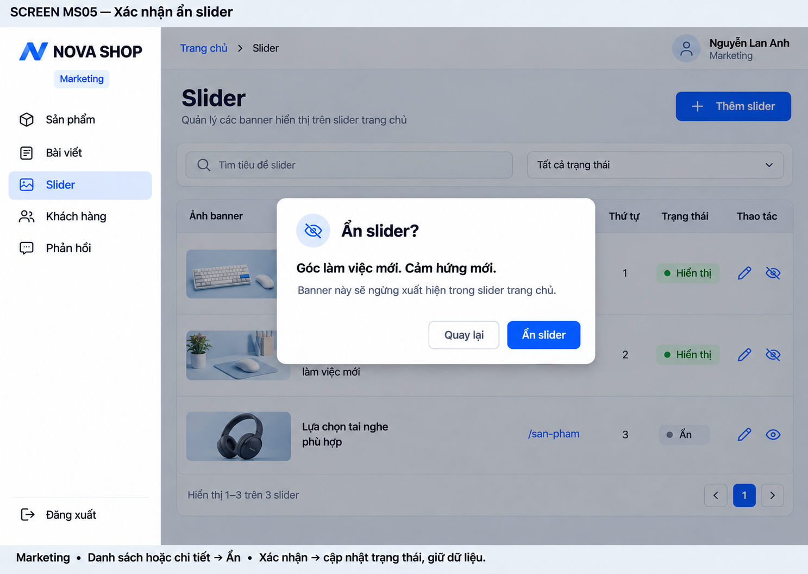
Vai trò: Marketing
Use case: Xác nhận ẩn slider
Điểm vào: MS01 hoặc MS03 → Ẩn
Hành động và đích đến: Ẩn → cập nhật trạng thái tại MS01/MS03; quay lại → màn nguồn
Điều kiện: Chỉ vai trò được cấp quyền. Ẩn/Hiện không xóa vĩnh viễn.
PR01 — Danh sách sản phẩm
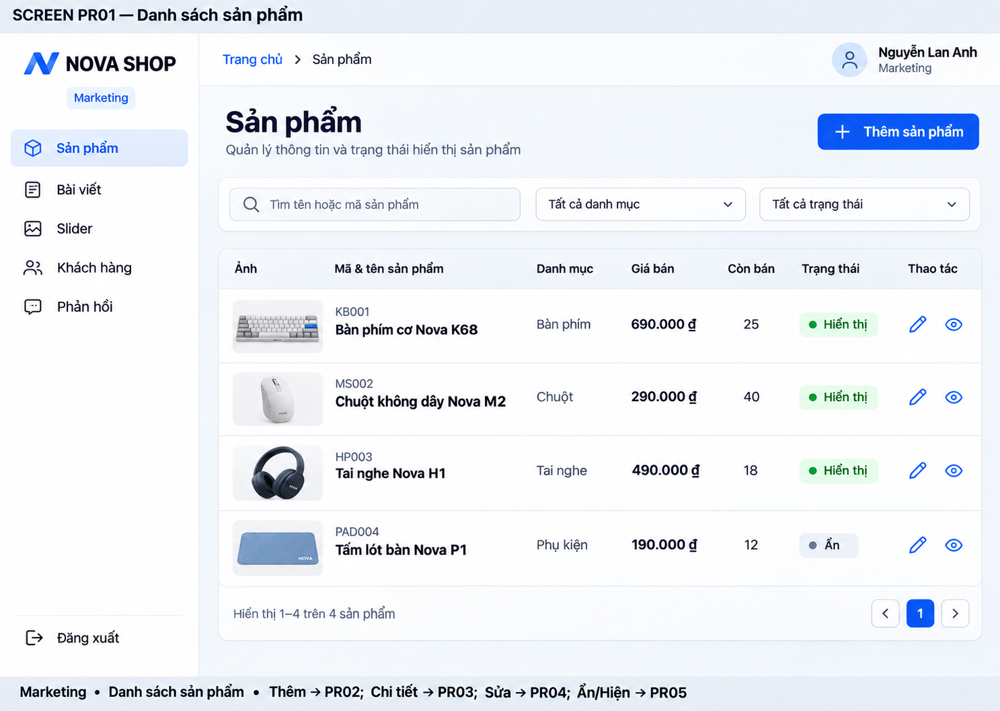
Vai trò: Marketing
Use case: Danh sách sản phẩm
Điểm vào: Sidebar Sản phẩm
Hành động và đích đến: Thêm → PR02; chi tiết → PR03
Điều kiện: Chỉ vai trò được cấp quyền. Ẩn/Hiện không xóa vĩnh viễn.
PR01-EMPTY — Chưa có sản phẩm
Vai trò: Marketing
Use case: Danh sách sản phẩm
Điểm vào: Biến thể của PR01
Hành động và đích đến: Thêm sản phẩm đầu tiên → PR02.
Điều kiện: Chỉ vai trò được cấp quyền. Ẩn/Hiện không xóa vĩnh viễn.
PR01-LOADING — Đang tải sản phẩm
Vai trò: Marketing
Use case: Danh sách sản phẩm
Điểm vào: Biến thể của PR01
Hành động và đích đến: Chờ tải xong → PR01; skeleton thay thế dữ liệu.
Điều kiện: Chỉ vai trò được cấp quyền. Ẩn/Hiện không xóa vĩnh viễn.
PR02 — Thêm sản phẩm
Vai trò: Marketing
Use case: Thêm sản phẩm
Điểm vào: PR01 → Thêm mới
Hành động và đích đến: Tạo → PR03; hủy → PR01
Điều kiện: Chỉ vai trò được cấp quyền. Ẩn/Hiện không xóa vĩnh viễn.
PR03 — Chi tiết sản phẩm
Vai trò: Marketing
Use case: Chi tiết sản phẩm
Điểm vào: PR01 → chọn bản ghi
Hành động và đích đến: Chỉnh sửa → PR04; ẩn → PR05; quay lại → PR01
Điều kiện: Chỉ vai trò được cấp quyền. Ẩn/Hiện không xóa vĩnh viễn.
PR04 — Chỉnh sửa sản phẩm
Vai trò: Marketing
Use case: Chỉnh sửa sản phẩm
Điểm vào: PR03 → Chỉnh sửa
Hành động và đích đến: Lưu → PR03; hủy → PR03
Điều kiện: Chỉ vai trò được cấp quyền. Ẩn/Hiện không xóa vĩnh viễn.
PR05 — Xác nhận ẩn sản phẩm
Vai trò: Marketing
Use case: Xác nhận ẩn sản phẩm
Điểm vào: PR01 hoặc PR03 → Ẩn
Hành động và đích đến: Ẩn → cập nhật trạng thái tại PR01/PR03; quay lại → màn nguồn
Điều kiện: Chỉ vai trò được cấp quyền. Ẩn/Hiện không xóa vĩnh viễn.
SF01 — Trang chủ
Vai trò: Guest / Customer
Use case: Trang chủ
Điểm vào: Truy cập website
Hành động và đích đến: Khám phá sản phẩm → SF02; bài viết → SF10
Điều kiện: Không có Chatbot AI. Dữ liệu minh họa; không phải hệ thống đang hoạt động.
SF01-M — Trang chủ — Mobile
Vai trò: Guest / Customer
Use case: Trang chủ
Điểm vào: Truy cập website
Hành động và đích đến: Khám phá sản phẩm → SF02; bài viết → SF10
Điều kiện: Không có Chatbot AI. Dữ liệu minh họa; không phải hệ thống đang hoạt động.
SF02 — Danh sách sản phẩm, tìm kiếm và lọc
Vai trò: Guest / Customer
Use case: Danh sách sản phẩm, tìm kiếm và lọc
Điểm vào: SF01 hoặc tìm kiếm
Hành động và đích đến: Xem sản phẩm → SF03; áp dụng/xóa bộ lọc → cập nhật kết quả
Điều kiện: Không có Chatbot AI. Dữ liệu minh họa; không phải hệ thống đang hoạt động.
SF02-M — Danh sách sản phẩm, tìm kiếm và lọc — Mobile
Vai trò: Guest / Customer
Use case: Danh sách sản phẩm, tìm kiếm và lọc
Điểm vào: SF01 hoặc tìm kiếm
Hành động và đích đến: Xem sản phẩm → SF03; áp dụng/xóa bộ lọc → cập nhật kết quả
Điều kiện: Không có Chatbot AI. Dữ liệu minh họa; không phải hệ thống đang hoạt động.
SF02-NORESULT — Không có kết quả
Vai trò: Guest / Customer
Use case: Danh sách sản phẩm, tìm kiếm và lọc
Điểm vào: Biến thể của SF02
Hành động và đích đến: Đổi từ khóa hoặc xóa bộ lọc → SF02.
Điều kiện: Không có Chatbot AI. Dữ liệu minh họa; không phải hệ thống đang hoạt động.
SF03 — Chi tiết sản phẩm
Vai trò: Guest / Customer
Use case: Chi tiết sản phẩm
Điểm vào: SF02
Hành động và đích đến: Thêm vào giỏ → SF04
Điều kiện: Không có Chatbot AI. Dữ liệu minh họa; không phải hệ thống đang hoạt động.
SF03-M — Chi tiết sản phẩm — Mobile
Vai trò: Guest / Customer
Use case: Chi tiết sản phẩm
Điểm vào: SF02
Hành động và đích đến: Thêm vào giỏ → SF04
Điều kiện: Không có Chatbot AI. Dữ liệu minh họa; không phải hệ thống đang hoạt động.
SF04 — Đã thêm vào giỏ
Vai trò: Guest / Customer
Use case: Đã thêm vào giỏ
Điểm vào: SF03 thêm vào giỏ thành công
Hành động và đích đến: Xem giỏ hàng → SF05; tiếp tục mua sắm → SF03
Điều kiện: Không có Chatbot AI. Dữ liệu minh họa; không phải hệ thống đang hoạt động.
SF05 — Giỏ hàng
Vai trò: Guest / Customer
Use case: Giỏ hàng
Điểm vào: Header Giỏ hàng hoặc SF04
Hành động và đích đến: Tiến hành đặt hàng → SF06; cập nhật số lượng/bỏ sản phẩm → tổng giỏ cập nhật
Điều kiện: Guest được đặt hàng không cần đăng nhập. COD là giả định; đặt hàng thành công không có nghĩa đã thanh toán.
SF05-EMPTY — Giỏ hàng trống
Vai trò: Guest / Customer
Use case: Giỏ hàng
Điểm vào: Biến thể của SF05
Hành động và đích đến: Khám phá sản phẩm → SF02, không phải SF06.
Điều kiện: Guest được đặt hàng không cần đăng nhập. COD là giả định; đặt hàng thành công không có nghĩa đã thanh toán.
SF05-ISSUES — Giỏ hàng cần cập nhật
Vai trò: Guest / Customer
Use case: Giỏ hàng
Điểm vào: Biến thể của SF05
Hành động và đích đến: Giảm số lượng hoặc bỏ sản phẩm không còn bán; thử lại cập nhật. Chưa cho checkout.
Điều kiện: Guest được đặt hàng không cần đăng nhập. COD là giả định; đặt hàng thành công không có nghĩa đã thanh toán.
SF05-M — Giỏ hàng — Mobile
Vai trò: Guest / Customer
Use case: Giỏ hàng
Điểm vào: Header Giỏ hàng hoặc SF04
Hành động và đích đến: Tiến hành đặt hàng → SF06; cập nhật số lượng/bỏ sản phẩm → tổng giỏ cập nhật
Điều kiện: Guest được đặt hàng không cần đăng nhập. COD là giả định; đặt hàng thành công không có nghĩa đã thanh toán.
SF06 — Thông tin nhận hàng
Vai trò: Guest / Customer
Use case: Thông tin nhận hàng
Điểm vào: SF05
Hành động và đích đến: Tiếp tục → SF07; quay lại → SF05
Điều kiện: Guest được đặt hàng không cần đăng nhập. COD là giả định; đặt hàng thành công không có nghĩa đã thanh toán.
SF06-M — Thông tin nhận hàng — Mobile
Vai trò: Guest / Customer
Use case: Thông tin nhận hàng
Điểm vào: SF05
Hành động và đích đến: Tiếp tục → SF07; quay lại → SF05
Điều kiện: Guest được đặt hàng không cần đăng nhập. COD là giả định; đặt hàng thành công không có nghĩa đã thanh toán.
SF07 — Kiểm tra và đặt hàng
Vai trò: Guest / Customer
Use case: Kiểm tra và đặt hàng
Điểm vào: SF06
Hành động và đích đến: Đặt hàng thành công → SF08; chỉnh sửa người nhận → SF06
Điều kiện: Guest được đặt hàng không cần đăng nhập. COD là giả định; đặt hàng thành công không có nghĩa đã thanh toán.
SF07-M — Kiểm tra và đặt hàng — Mobile
Vai trò: Guest / Customer
Use case: Kiểm tra và đặt hàng
Điểm vào: SF06
Hành động và đích đến: Đặt hàng thành công → SF08; chỉnh sửa người nhận → SF06
Điều kiện: Guest được đặt hàng không cần đăng nhập. COD là giả định; đặt hàng thành công không có nghĩa đã thanh toán.
SF08 — Đặt hàng thành công
Vai trò: Guest / Customer
Use case: Đặt hàng thành công
Điểm vào: SF07 tạo đơn thành công
Hành động và đích đến: Tiếp tục mua sắm → SF02 (ảnh Guest)
Điều kiện: Guest được đặt hàng không cần đăng nhập. COD là giả định; đặt hàng thành công không có nghĩa đã thanh toán.
SF08-M — Đặt hàng thành công — Mobile
Vai trò: Guest / Customer
Use case: Đặt hàng thành công
Điểm vào: SF07 tạo đơn thành công
Hành động và đích đến: Tiếp tục mua sắm → SF02 (ảnh Guest)
Điều kiện: Guest được đặt hàng không cần đăng nhập. COD là giả định; đặt hàng thành công không có nghĩa đã thanh toán.
SF09 — Danh sách Blog
Vai trò: Guest / Customer
Use case: Danh sách Blog
Điểm vào: Menu Blog
Hành động và đích đến: Đọc bài → SF10
Điều kiện: Không có Chatbot AI. Dữ liệu minh họa; không phải hệ thống đang hoạt động.
SF10 — Chi tiết Blog
Vai trò: Guest / Customer
Use case: Chi tiết Blog
Điểm vào: SF09 hoặc bài viết trang chủ
Hành động và đích đến: Quay lại Blog → SF09
Điều kiện: Không có Chatbot AI. Dữ liệu minh họa; không phải hệ thống đang hoạt động.
SF11 — Gửi phản hồi
Vai trò: Guest / Customer
Use case: Gửi phản hồi
Điểm vào: Liên kết Gửi phản hồi ở footer
Hành động và đích đến: Gửi → ghi nhận phản hồi, hiển thị trong MF01
Điều kiện: Không có Chatbot AI. Dữ liệu minh họa; không phải hệ thống đang hoạt động.
SL01 — Đơn được giao
Vai trò: Sale
Use case: Đơn được giao
Điểm vào: Sale đăng nhập
Hành động và đích đến: Xem chi tiết → SL02
Điều kiện: Chỉ đơn được giao cho Sale hiện tại. Chuyển trạng thái theo thứ tự; không phân công, sửa giá hoặc tự hủy.
SL01-EMPTY — Chưa có đơn được giao
Vai trò: Sale
Use case: Đơn được giao
Điểm vào: Biến thể của SL01
Hành động và đích đến: Làm mới → tải lại SL01. Không có quyền tự phân công.
Điều kiện: Chỉ đơn được giao cho Sale hiện tại. Chuyển trạng thái theo thứ tự; không phân công, sửa giá hoặc tự hủy.
SL02 — Chi tiết đơn được giao
Vai trò: Sale
Use case: Chi tiết đơn được giao
Điểm vào: SL01
Hành động và đích đến: Cập nhật đơn → SL03; quay lại → SL01
Điều kiện: Chỉ đơn được giao cho Sale hiện tại. Chuyển trạng thái theo thứ tự; không phân công, sửa giá hoặc tự hủy.
SL03 — Cập nhật đơn
Vai trò: Sale
Use case: Cập nhật đơn
Điểm vào: SL02
Hành động và đích đến: Lưu cập nhật → SL02; trạng thái Customer được cập nhật
Điều kiện: Chỉ đơn được giao cho Sale hiện tại. Chuyển trạng thái theo thứ tự; không phân công, sửa giá hoặc tự hủy.
SM01 — Tất cả đơn hàng
Vai trò: Sale Manager
Use case: Tất cả đơn hàng
Điểm vào: Sale Manager đăng nhập
Hành động và đích đến: Xem chi tiết → SM02; lọc Chưa phân công
Điều kiện: Xem toàn bộ đơn và phân công. Phân công không đổi trạng thái xử lý; không mặc định thêm quyền cập nhật trạng thái.
SM02 — Chi tiết đơn dành cho Manager
Vai trò: Sale Manager
Use case: Chi tiết đơn dành cho Manager
Điểm vào: SM01
Hành động và đích đến: Giao cho Sale → SM03 nếu chưa phân công
Điều kiện: Xem toàn bộ đơn và phân công. Phân công không đổi trạng thái xử lý; không mặc định thêm quyền cập nhật trạng thái.
SM03 — Giao đơn cho Sale
Vai trò: Sale Manager
Use case: Giao đơn cho Sale
Điểm vào: SM02
Hành động và đích đến: Xác nhận → SM02 có người phụ trách; đơn xuất hiện ở SL01 của Sale được chọn
Điều kiện: Xem toàn bộ đơn và phân công. Phân công không đổi trạng thái xử lý; không mặc định thêm quyền cập nhật trạng thái.